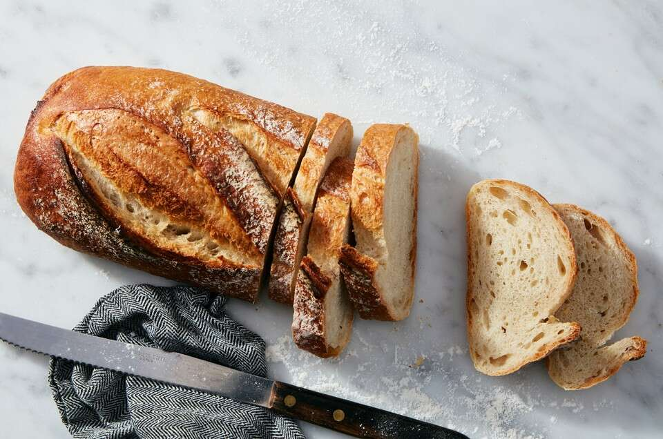

Sourdough Bread

Nothing like a good old batch of rustic sourdough bread.
Ingredients needed:
- 1 cup of ripe sourdough starter
- 1 1/2 cups of water
- 1 to 2 teaspoons of instant yeast
- 2 1/2 teaspoons of salt
- 5 cups of King Aurthur Unbleached All-Purpose Flour
Steps:
- Weigh your flour and combine all of the ingredients
- Allow the dough to rise, in a lightly greased, covered bowl, until it's about doubled
in size, about 90 minutes
- Gently divide the dough in half and pull the edges into the center, turning it over so the seam is on
the bottom and rolling under your cupped hands to form a ball. Then let the dough rest, covered, for 15 minutes
- For a longer loaf, continue rolling until they are about 10" to 11" long
- Place the loaves on a lightly greased baking sheet. Cover and let rinse until very puffy, about 1 hour. Towards
The end of the rising time, preheat the oven to 425°F
- Spray the loaves with lukewarm water and dust generously with flour
- Make two fairly deep diagonal slashes in each; a serrated bread knife wielded firmly
- Bake the bread for 25 to 30 minutes until its a deep golden brown. Remove from oven and cool on a rack
Reference: here